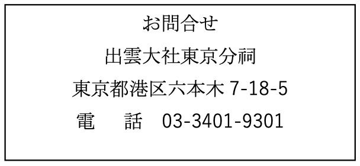
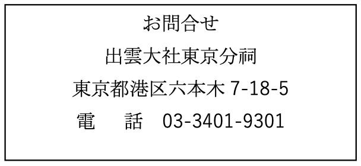

令和７年夏越の大祓のご案内
令和７年夏越の大祓のご案内
投稿日: 2025.6.21

 


新 着 情 報
令和７年
夏越の大祓
6 月 28 日 (土) 午後 3 時
6 月 29 日 (日) 午後 3 時
6 月 30 日 (月) 午後 3 時
（受付 午後 2 時 30 分 開始）
〇 御参列の予約は不要です。
皆様ご参列できますので、ご家族・ご友人お誘いあわせの上、お越し下さいませ。
6 月 28 日・29 日・30 日に夏越の大祓を執り行いますのでご案内申し上げます。
私達は日常生活の中で、知らず知らずのうちに身も心も過ちを犯し、少しずつ罪穢（つみけがれ）が犯してしまいます。生きとし生けるものが成長を迎える夏にあたって、心身を祓い清めて清浄な姿で、明るく理想的な夏を越してゆくための大切な節目となる行事です。
大祓はどなたでもお参りできますので、ご家族・友人とご一緒にご参列下さいませ。込み合うことが予想されますので、早めのご到着にご協力下さいませ。
また、ご都合によって当日お参りできない方には、案内書と人形をお送りいたしますので、ご連絡下さいませ。
お問い合わせ
出雲大社東京分祠
〒106-0032 東京都港区六本木7-18-5
TEL: 03-3401-9301
受付時間: 午前9時～午後5時